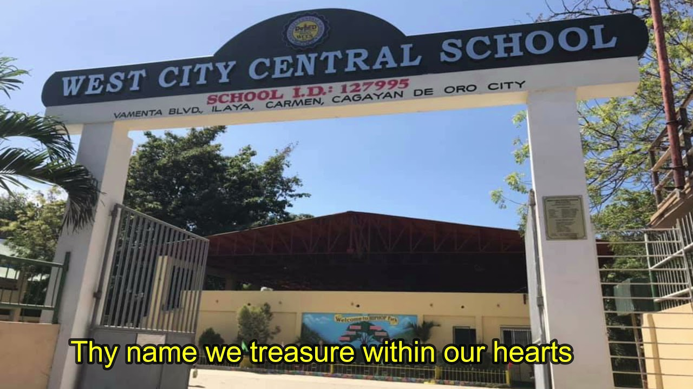

SCHOOLS ATTENDED

University of Science and
Technology of Southern Philippines
I'm currently a second-year student pursuing a Bachelor of Science in Information Technology (BSIT) degree at USTP School.

PHINMA - Cagayan de Oro College
I completed my junior high school and senior high school education at Phinma College of Cagayan de Oro. It was a great learning experience that prepared me for my college studies.

West City Central School
During my elementary years, I attended West City Central School where I gained a strong foundation in academics and developed my passion for learning.